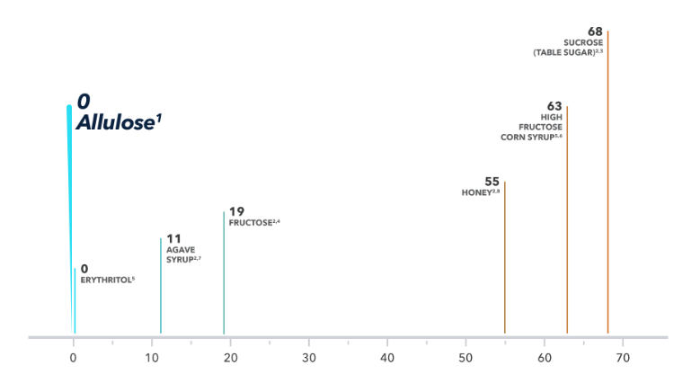
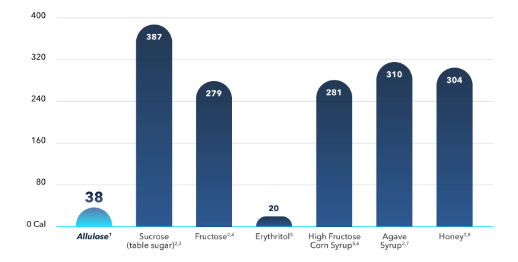

Allulose
A new way to think about sugar.
Meet Allulose!
A groundbreaking new sweetener that looks like sugar, tastes like sugar, but does not behave like sugar!
Allulose is actually considered a sugar but is composed a bit differently, and this is what gives it its uniqueness, setting it far apart from sugar.

Our bodies lack the enzyme to digest allulose, so while we can absorb it, we cannot metabolize or “use” it.
Seventy percent of allulose is actually excreted in the urine.
The Result
It does not impact blood glucose levels
It’s nearly calorie-free — contains just 1/10th the calories of sugar
Has very low fermentability, which translates to no unpleasant GI effects
Glycemic Index Comparison
Calories Per 100g Comparison
- Allulose.org
- International Table of Glycemic Index and Glycemic Load Values: 2002
- USDA: Food Composition Database – Sugar
- USDA: Food Composition Database – Fructose
- Chattopadhyay S, Raychaudhuri U, Chakraborty R. Artificial Sweeteners – A Review. J Food Sci Technol. 2014; 51(4): 611-621
- USDA: Food Composition Database – High Fructose Corn Syrup
- USDA: Food Composition Database – Agave Syrup
- USDA: Food Composition Database - Honey
Understanding the Labels
Note the US FDA recognizes that while allulose has a chemical structure similar to other sugars, it is not metabolized by the body in the same way as most sugars and does not contribute the same number of calories. As a result, it requires allulose to be listed as part of the Total Carbohydrate on food labels, but not a sugar, and thus can be subtracted from the “Net Carbohydrates” when considering its impact to the user.
Products Formulated With Allulose
With more being added soon.
NRG Meal™ Bar
- Features an impressive 20 grams of protein per bar
- Fortified with therapeutic levels of carnitine and CoQ10, making it the perfect choice for pre/post workout nourishment
- Excellent between-meal snack, for sustained energy
- Only 6 g net carbs per bar
- Free of gluten, maltitol, fructose, sucrose, artificial sweeteners, soy protein & hydrogenated oils
- Healthy fats from sunflower seed butter & palm oil
- Sweetened with allulose, erythritol & stevia extract
KTO-BAR™
- Only 2 net carbs per bar
- 10 grams of protein
- Only 15 grams of fat
- Functional food bar specifically formulated for ketogenic, low carb diets
- An ideal snack or source of energy for those reducing their sugar intake
PALEO BAR™
- Protein-rich, high fiber, micronutrient dense snack
- Protein blend (10 g) of bone broth protein isolate, hemp protein, and pumpkin seed protein
- Features HydroBEEF™, the highest quality Swedish bovine bone broth protein isolate with 70% collagen
- Bone broth protein supports the formation of collagen, the primary structural component of connective tissue, which plays a role in skin repair/renewal, and the support of healthy joints, tendons, and ligaments
- High fiber content (8 g)
- Only 8 grams of net carbs — minimally impacts blood sugar levels
- High-quality fats from sunflower seed butter
C.C. MEAL™
- Great option for a small meal, pre- or post-workout, or snack between meals
- Dairy-free
- Nut-free formula†; made with sunflower seed butter rather than nut butters
- 10 g protein and 7 g fiber per bar
- Only 7 g net carbs
- Contains only low-glycemic sweeteners (allulose, erythritol, and stevia)
- Does not contain fructose, sucrose, and rice syrup solids
- Vegetarian-friendly — protein sourced from pea and hemp
- Made on equipment shared with peanuts and tree nuts.
For More Info
Contact our Customer Experience Team at 1-860-623-6314 to learn more about allulose.